Rambleon All chapters The season Route guide About Rambleon Chapter 2 — Alther's Mill
Rambleon Birdsong · November 8, 2026 · 7h 39m in Azeroth
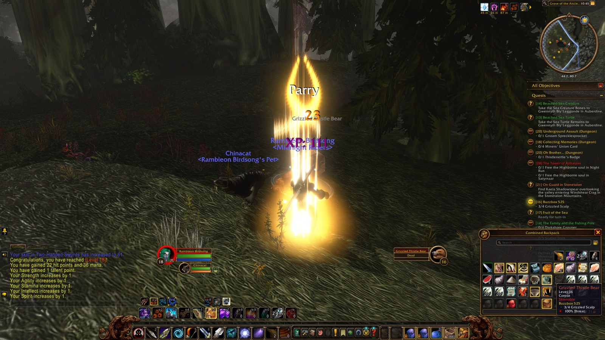
10:45 AM — Reached Level 18 in Grove of the Ancients 7h 39m in Azeroth tonight.
2 levels.
24 quests.
63 places.
366 enemies slain.
9 deaths.
7 travelling companions.
Ramble on.
24 Quests
63 Places
366 Enemies slain
22 Loot
9 Deaths
7 People
41,061 XP
59 Lines of roleplay
Quests Turned in24 Still open22 Carrying4
Quest Turned in at Lv Ashenvale Trek to Ashenvale Astranaar 17 Darkshore Buzzbox 525 Twilight Vale 18 Fruit of the Sea Auberdine 18 Beached Sea Turtle Auberdine 18 Beached Sea Creature Auberdine 18 Westfall Patrolling Westfall Sentinel Tower 18 The People's Militia Sentinel Tower 18 The Defias Brotherhood ×3 Sentinel Tower 18 Messenger to Westfall Sentinel Tower 18 Redridge Mountains Encroaching Gnolls 18 The Defias Brotherhood Lakeshire 18 A Free Lunch Three Corners 18 Messenger to Stormwind Lakeshire 18 Visit the Herbalist Lakeshire 18 Delivering Daffodils Lakeshire 18 Messenger to Westfall Lakeshire 19 Stormwind City The Defias Brotherhood SI:7 18 Humble Beginnings Cathedral Square 18 Messenger to Stormwind Valley of Heroes 18 The Unsent Letter Cathedral Square 19 Underground Assault Dwarven District 19 Bazil Thredd 19
Quest Picked up at Red Leather Bandanas Sentinel Hill ... and that note you found Alexston Farmstead The People's Militia Sentinel Tower Assessing the Threat Redridge Mountains Show of Force Redridge Mountains Blackrock Menace Lakeshire Blackrock Blockade Lakeshire The Lost Tools Lakeshire The Price of Shoes Lakeshire WANTED: Gath'Ilzogg Lakeshire WANTED: Incinerator Gar'im Lakeshire Solomon's Law Lakeshire Selling Fish Lakeshire WANTED: Lieutenant Fangore Lakeshire Dry Times Lakeshire An Unwelcome Guest Lakeshire Redridge Goulash Lakeshire Hilary's Necklace Lake Everstill The Coastal Menace Sentinel Hill Thunderbrew The Dagger Hills The Stockade Riots Stormwind City Messenger to Darkshire Lakeshire
Quest Picked up at Since On Guard in Stonetalon Astranaar Chapter 1 The Tower of Althalaxx Maestra's Post Chapter 1 Oh Brother... Dwarven District Chapter 1 Collecting Memories Dwarven District Chapter 1
As far as Rambleon knows: a quest picked up before it was installed, or abandoned before it recorded that, is not here.
Scenes 10:11 AM A scene in Auberdine with Ashaton Parson, Syl Windblest, Zushi Korto and 3 others
Ashaton Parson “Happy Sunday dudes”
Syl Windblest “happy sunday”
Rambleon Birdsong “seriously my dudes”
Zushi Korto kneels before Gershala Nightwhisper.
Rambleon Birdsong “happy sun”
Kist Ara “happy day”
Smalls Corvick “#gopackgo”
Zushi Korto “ew”
Maxrim Taim “ty for camp”
Zushi Korto “Vikings year baby”
Smalls Corvick “frauds”
Zushi Korto “first*”
Smalls Corvick “lol”
Smalls Corvick “fair”
Zushi Korto “lol”
Rambleon Birdsong “and for that reason”
Rambleon Birdsong “im out”
Rambleon Birdsong “go patriots”
10:30 AM A scene in Twilight Shore with Lunaria Grace
Rambleon Birdsong “wanna get these bones?”
Lunaria Grace “I got them already but I can help”
Rambleon Birdsong “thx all good if u gotta move”
11:19 AM A scene in Stormwind Harbor with Soulsting Dawnbreaker
Rambleon Birdsong “what up”
Soulsting Dawnbreaker applauds. Bravo!
11:28 AM A scene in Goldshire, alone
Rambleon Birdsong “hey yall my guild is an east coast guild meaning we play around 8pm-12pm EST most nights and we are looking for people to just run with... we are gonna do DM tn... lmk if u want in we have a good group of 10-12 nice players who like to party up”
12:33 PM A scene in Alexston Farmstead with Rutland Greenmont
Rambleon Birdsong “thx”
Rutland Greenmont “np”
Rutland Greenmont “gl”
Rambleon Birdsong “u wanna guild up rutland were doing DM tn”
Rutland Greenmont “Maybe. I've got some friends who are trying to get me into a guild, but I'll keep it in mind.”
Rutland Greenmont “ty tho”
1:14 PM A scene in Sentinel Hill with Cassidy Darkstarr, Sneakin Mcstabbin, Aurore Spelljoy and Honored Chaplain
Cassidy Darkstarr lies down.
Rambleon Birdsong “WHERE REPAIR ROUND HERE?”
Sneakin Mcstabbin “insied”
Aurore Spelljoy “down the hill”
Sneakin Mcstabbin “quartermaster”
Rambleon Birdsong “thx”
Honored Chaplain “go to carts by flight point”
Rambleon Birdsong “oh no qmaster cant do it”
Sneakin Mcstabbin “literally straight ahead”
5:07 PM Overheard in Sentinel Hill: Rs Healz and Vikhan Dreadwhisper
Rs Healz “we went thru STV on the road, bad times”
Rs Healz “westfall coast, just swim the whole time”
Rs Healz “its simple”
Rs Healz “you gotta do the quest”
Rs Healz “it starts in westfall. at the farm with the ! on questie”
Vikhan Dreadwhisper “really there something called sleeping bags?”
Rs Healz “alexton farmstead”
Rs Healz “|cnIQ3:|Hitem:211527::::::::19:1484::11:::::::|h[Cozy Sleeping Bag]|h|r”
5:14 PM A scene in Moonbrook with Alifax Jacket
Alifax Jacket yells “THIS IS OUR CITY!!! GET OUT!!!”
You lie down before Westfall Woodworker.
You lie down before Westfall Woodworker.
8:58 PM Overheard in Moonbrook: Cassidy Darkstarr and Saint Highfather
Cassidy Darkstarr bursts into dance.
Cassidy Darkstarr bursts into dance.
Saint Highfather “anyone need heals for dm”
Saint Highfather “heals for dm?”
The Journey 664 moments, in order · fold
10:07 AM — Began the adventure
10:07 AM — Entered Trade District (Stormwind City)
10:09 AM — Hearthed home to Auberdine
10:09 AM — Entered Auberdine (Darkshore)
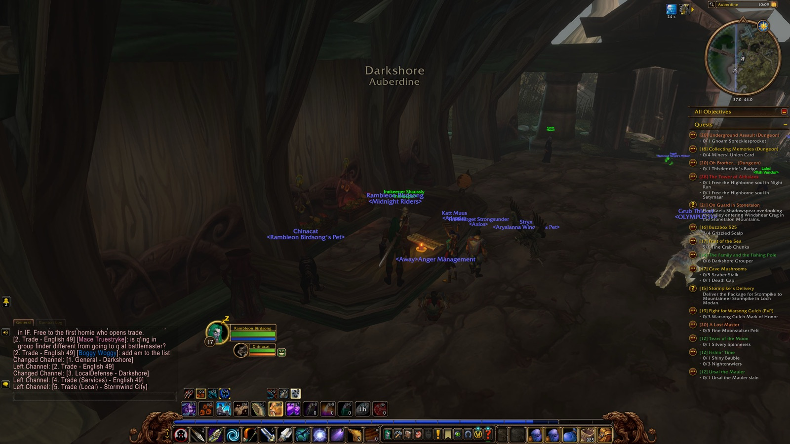
10:09 AM — Entered Darkshore 10:11 AM — A scene in Auberdine with Ashaton Parson, Syl Windblest, Zushi Korto and 3 others (18 lines) 10:13 AM — Accepted "Trek to Ashenvale"
10:13 AM — Entered Darkshore
10:15 AM — Entered Auberdine (Darkshore)
10:16 AM — Flew from Auberdine to Astranaar, Ashenvale
10:16 AM — Entered The Long Wash (Darkshore)
10:16 AM — Entered Twilight Shore (Darkshore)
10:17 AM — Entered The Zoram Strand (Ashenvale)
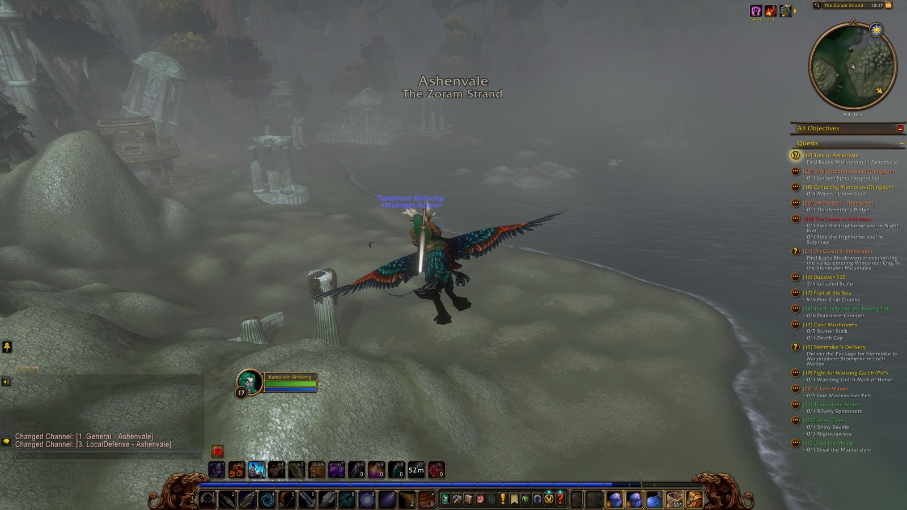
10:17 AM — Entered Ashenvale 10:17 AM — Entered Ashenvale
10:18 AM — Entered Lake Falathim (Ashenvale)
10:18 AM — Entered The Shrine of Aessina (Ashenvale)
10:18 AM — Entered Ashenvale
10:19 AM — Entered Astranaar (Ashenvale)
10:20 AM — Completed "Trek to Ashenvale"
10:20 AM — Flew from Astranaar to Auberdine, Darkshore
10:20 AM — Entered Ashenvale
10:21 AM — Entered Maestra's Post (Ashenvale)
10:21 AM — Entered Ashenvale
10:21 AM — Entered Twilight Vale (Darkshore)
10:22 AM — Entered Twilight Shore (Darkshore)
10:22 AM — Entered The Long Wash (Darkshore)
10:23 AM — Entered Auberdine (Darkshore)
10:23 AM — Entered The Long Wash (Darkshore)
10:24 AM — Entered Twilight Shore (Darkshore)
10:28 AM — First Greymist Coastrunner slain
10:29 AM — First Greymist Seer slain
10:29 AM — Accepted "Beached Sea Turtle"
10:29 AM — Take the Sea Turtle Remains to Gwennyth Bly'Leggonde in Auberdine. — "Beached Sea Turtle"
10:30 AM — A scene in Twilight Shore with Lunaria Grace (3 lines) 10:31 AM — First Greymist Netter slain
10:32 AM — Accepted "Beached Sea Creature"
10:32 AM — Take the Sea Creature Bones to Gwennyth Bly'Leggonde in Auberdine. — "Beached Sea Creature"
10:33 AM — First Reef Crawler slain
10:33 AM — 6/6 Fine Crab Chunks — "Fruit of the Sea"
10:34 AM — Entered Twilight Vale (Darkshore)
10:34 AM — Entered The Master's Glaive (Darkshore)
10:35 AM — Entered Twilight Vale (Darkshore)
10:36 AM — Entered Twilight Shore (Darkshore)
10:36 AM — First Moonstalker Matriarch slain
10:37 AM — First Moonstalker Runt slain
10:37 AM — Entered Twilight Vale (Darkshore)
10:37 AM — Entered Twilight Shore (Darkshore)
10:37 AM — Entered Twilight Vale (Darkshore)
10:37 AM — Entered The Master's Glaive (Darkshore)
10:38 AM — First Moonstalker Sire slain
10:38 AM — Entered Twilight Vale (Darkshore)
10:38 AM — Entered The Master's Glaive (Darkshore)
10:39 AM — First Grizzled Thistle Bear slain
10:39 AM — Entered Twilight Vale (Darkshore)
10:43 AM — First Blackwood Ursa slain
10:45 AM — Entered Grove of the Ancients (Darkshore)
10:45 AM — Reached Level 18
10:46 AM — 4/4 Grizzled Scalp — "Buzzbox 525"
10:47 AM — Looted Feral Bindings of the Monkey (Uncommon)
10:48 AM — Entered Twilight Vale (Darkshore)
10:48 AM — Completed "Buzzbox 525"
10:57 AM — Looted Moss Agate (Uncommon)
11:07 AM — Accepted "One Shot. One Kill."
11:07 AM — First Blackwood Tracker slain
11:08 AM — Slain by Giant Foreststrider in Twilight Vale
11:08 AM — Back among the living
11:09 AM — Entered Ashenvale
11:09 AM — Entered Twilight Vale (Darkshore)
11:09 AM — Entered Ashenvale
11:11 AM — Hearthed home to Auberdine
11:15 AM — Abandoned "One Shot. One Kill."
11:15 AM — Hearthed home to Auberdine
11:15 AM — Entered Auberdine (Darkshore)
11:16 AM — Completed "Fruit of the Sea"
11:16 AM — Looted Shucking Gloves (Uncommon)
11:16 AM — Completed "Beached Sea Turtle"
11:16 AM — Completed "Beached Sea Creature"
11:17 AM — Entered The Long Wash (Darkshore)
11:17 AM — Entered Mist's Edge (Darkshore)
11:18 AM — Entered The Long Wash (Darkshore)
11:18 AM — Entered The Veiled Sea (Darkshore)
11:18 AM — Entered Stormwind Harbor (Stormwind City)
11:19 AM — A scene in Stormwind Harbor with Soulsting Dawnbreaker (2 lines) 11:20 AM — Entered The Canals (Stormwind City)
11:22 AM — Learned |cff71d5ff|Hspell:1278067:0|h[Bait and Tackle]|h|r
11:22 AM — Learned Bait and Tackle
11:22 AM — Learned Fishing
11:22 AM — Learned Fishing
11:22 AM — Entered Trade District (Stormwind City)
11:25 AM — Entered Valley of Heroes (Stormwind City)
11:25 AM — Entered Elwynn Forest
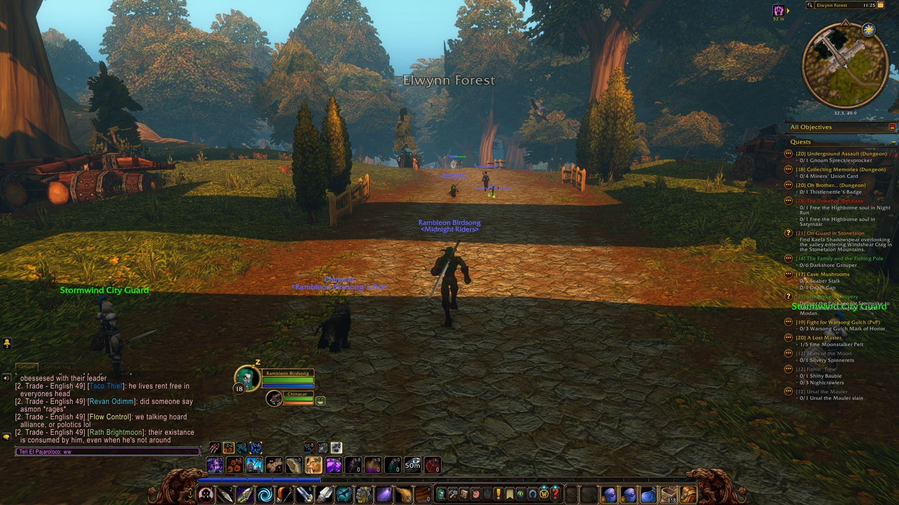
11:25 AM — Entered Elwynn Forest 11:27 AM — Entered Goldshire (Elwynn Forest)
11:28 AM — A scene in Goldshire, alone (1 line) 11:29 AM — Learned |cff71d5ff|Hspell:1002:0|h[Eyes of the Beast]|h|r
11:29 AM — Learned Eyes of the Beast
11:29 AM — Learned Scare Beast
11:29 AM — Learned Immolation Trap
11:29 AM — Learned Aspect of the Hawk
11:29 AM — Learned Multi-Shot
11:29 AM — Learned Serpent Sting
11:29 AM — Learned Track Undead
11:29 AM — Entered Elwynn Forest
11:31 AM — Entered Forest's Edge (Elwynn Forest)
11:32 AM — Entered Westbrook Garrison (Elwynn Forest)
11:32 AM — Discovered Westbrook Garrison
11:32 AM — Discovered Westbrook Garrison
11:32 AM — Entered Forest's Edge (Elwynn Forest)
11:33 AM — Entered Westfall
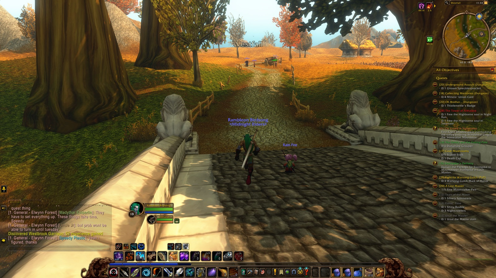
11:33 AM — Entered Westfall 11:48 AM — Joined forces with Cassidy (Druid)
11:49 AM — Entered The Jansen Stead (Westfall)
11:49 AM — Abandoned "Goretusk Liver Pie"
11:49 AM — Entered Westfall
11:49 AM — Abandoned "Kobold Candles"
11:49 AM — Abandoned "Princess Must Die!"
11:50 AM — Abandoned "Further Concerns"
11:51 AM — Abandoned "The Forgotten Heirloom"
11:51 AM — Discovered Sentinel Hill
11:51 AM — Discovered Sentinel Hill
11:51 AM — Entered Sentinel Hill (Westfall)
11:51 AM — Abandoned "Poor Old Blanchy"
11:51 AM — Abandoned "The Killing Fields"
11:51 AM — Found the flight path at Sentinel Hill
11:52 AM — Accepted "Red Leather Bandanas"
12:05 PM — Entered Sentinel Tower (Westfall)
12:05 PM — Accepted "The Defias Brotherhood"
12:05 PM — Accepted "The People's Militia"
12:05 PM — Accepted "Patrolling Westfall"
12:05 PM — Entered Sentinel Hill (Westfall)
12:06 PM — Entered Westfall
12:07 PM — Entered Saldean's Farm (Westfall)
12:08 PM — Entered Westfall
12:08 PM — Entered Furlbrow's Pumpkin Farm (Westfall)
12:08 PM — First Harvest Watcher slain
12:11 PM — Discovered Longshore
12:11 PM — Entered Longshore (Westfall)
12:11 PM — Accepted "Murloc Gills"
12:12 PM — Abandoned "Murloc Gills"
12:12 PM — Entered Jangolode Mine (Westfall)
12:12 PM — Discovered Jangolode Mine
12:12 PM — Discovered Jangolode Mine
12:14 PM — First Defias Trapper slain
12:17 PM — Entered Westfall
12:17 PM — Entered Furlbrow's Pumpkin Farm (Westfall)
12:18 PM — Entered Westfall
12:18 PM — Entered The Molsen Farm (Westfall)
12:18 PM — Discovered The Molsen Farm
12:18 PM — Discovered The Molsen Farm
12:21 PM — 15/15 Defias Smuggler slain — "The People's Militia"
12:22 PM — Entered Westfall
12:25 PM — Looted Pioneer Trousers of Agility (Uncommon)
12:26 PM — First Fleshripper slain
12:27 PM — Entered The Molsen Farm (Westfall)
12:27 PM — Entered Westfall
12:29 PM — Entered Gold Coast Quarry (Westfall)
12:29 PM — Discovered Gold Coast Quarry
12:29 PM — Discovered Gold Coast Quarry
12:29 PM — First Defias Pillager slain
12:31 PM — Slain by Defias Looter in Gold Coast Quarry
12:31 PM — Entered Sentinel Hill (Westfall)
12:31 PM — Entered Westfall
12:31 PM — Entered Alexston Farmstead (Westfall)
12:32 PM — Entered Gold Coast Quarry (Westfall)
12:32 PM — Back among the living
12:32 PM — Entered Longshore (Westfall)
12:32 PM — Entered Gold Coast Quarry (Westfall)
12:32 PM — Discovered Alexston Farmstead
12:32 PM — Discovered Alexston Farmstead
12:32 PM — Entered Alexston Farmstead (Westfall)
12:32 PM — First Riverpaw Herbalist slain
12:33 PM — First Riverpaw Mongrel slain
12:33 PM — Slain by Riverpaw Mongrel in Alexston Farmstead
12:33 PM — Entered Sentinel Hill (Westfall)
12:33 PM — Entered Westfall
12:33 PM — Back among the living
12:33 PM — Entered Alexston Farmstead (Westfall)
12:33 PM — A scene in Alexston Farmstead with Rutland Greenmont (6 lines) 12:35 PM — Looted Riverpaw Leather Vest (Uncommon)
12:36 PM — Slain by Riverpaw Mongrel in Alexston Farmstead
12:36 PM — Entered Sentinel Hill (Westfall)
12:36 PM — Entered Westfall
12:37 PM — Entered Alexston Farmstead (Westfall)
12:37 PM — Back among the living
12:43 PM — Entered Longshore (Westfall)
12:43 PM — Entered Alexston Farmstead (Westfall)
12:45 PM — Entered Gold Coast Quarry (Westfall)
12:47 PM — First Riverpaw Miner slain
12:47 PM — Looted Hunting Pants (Uncommon)
12:49 PM — First Defias Looter slain
12:50 PM — Looted Tigerseye (Uncommon)
12:51 PM — First Defias Messenger slain
12:51 PM — Entered Westfall
12:51 PM — Entered Alexston Farmstead (Westfall)
12:52 PM — Accepted "... and that note you found"
12:53 PM — Slain by Defias Pathstalker in Alexston Farmstead
12:53 PM — Entered Sentinel Hill (Westfall)
12:53 PM — Entered Westfall
12:53 PM — Entered Stendel's Pond (Westfall)
12:53 PM — Entered Westfall
12:54 PM — Back among the living
12:54 PM — Entered Alexston Farmstead (Westfall)
12:56 PM — Accepted "Humble Beginnings"
12:57 PM — Looted Riverpaw Leather Vest (Uncommon)
12:58 PM — 1/1 A Simple Compass — "Humble Beginnings"
1:01 PM — Entered Westfall
1:01 PM — Entered Alexston Farmstead (Westfall)
1:07 PM — 8/8 Gnoll Paw — "Patrolling Westfall"
1:08 PM — Entered Westfall
1:08 PM — Entered Stendel's Pond (Westfall)
1:08 PM — Discovered Stendel's Pond
1:08 PM — Discovered Stendel's Pond
1:08 PM — Entered Westfall
1:09 PM — Entered Moonbrook (Westfall)
1:09 PM — Discovered Moonbrook
1:09 PM — Discovered Moonbrook
1:09 PM — Entered Westfall
1:11 PM — Entered Stendel's Pond (Westfall)
1:11 PM — Entered Westfall
1:11 PM — Entered Sentinel Hill (Westfall)
1:12 PM — Entered Sentinel Tower (Westfall)
1:12 PM — Completed "Patrolling Westfall"
1:12 PM — Entered Sentinel Hill (Westfall)
1:14 PM — A scene in Sentinel Hill with Cassidy Darkstarr, Sneakin Mcstabbin, Aurore Spelljoy and Honored Chaplain (9 lines) 1:15 PM — Entered Sentinel Tower (Westfall)
1:16 PM — Entered Sentinel Hill (Westfall)
1:16 PM — Entered Sentinel Tower (Westfall)
1:16 PM — Entered Sentinel Hill (Westfall)
4:10 PM — Entered Sentinel Hill (Westfall)
4:15 PM — Entered Westfall
4:15 PM — First Defias Trapper slain
4:15 PM — 15/15 Defias Trapper slain — "The People's Militia"
4:18 PM — Entered Sentinel Hill (Westfall)
4:18 PM — Entered Westfall
4:19 PM — Entered Sentinel Hill (Westfall)
4:19 PM — Entered Westfall
4:19 PM — Entered Sentinel Hill (Westfall)
4:19 PM — Entered Westfall
4:20 PM — Entered Sentinel Hill (Westfall)
4:20 PM — Entered Sentinel Tower (Westfall)
4:20 PM — Completed "The People's Militia"
4:21 PM — Accepted "The People's Militia"
4:21 PM — Entered Sentinel Hill (Westfall)
4:22 PM — Entered Westfall
4:23 PM — Entered Sentinel Hill (Westfall)
4:23 PM — Entered Westfall
4:24 PM — Entered The Molsen Farm (Westfall)
4:25 PM — Entered Westfall
4:25 PM — Entered The Molsen Farm (Westfall)
4:25 PM — Entered Westfall
4:25 PM — Entered Saldean's Farm (Westfall)
4:25 PM — Joined forces with Cassidy (Druid)
4:25 PM — Entered Westfall
4:26 PM — Entered Saldean's Farm (Westfall)
4:26 PM — Entered Westfall
4:27 PM — Entered The Jansen Stead (Westfall)
4:27 PM — Entered Westfall
4:27 PM — Entered Forest's Edge (Elwynn Forest)
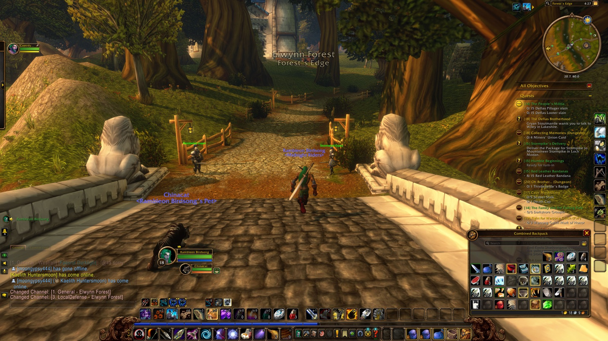
4:27 PM — Entered Elwynn Forest 4:28 PM — Entered Elwynn Forest
4:29 PM — Entered Goldshire (Elwynn Forest)
4:30 PM — Entered Elwynn Forest
4:30 PM — Discovered Crystal Lake
4:30 PM — Discovered Crystal Lake
4:30 PM — Entered Crystal Lake (Elwynn Forest)
4:30 PM — Entered Elwynn Forest
4:34 PM — Entered Three Corners (Redridge Mountains)
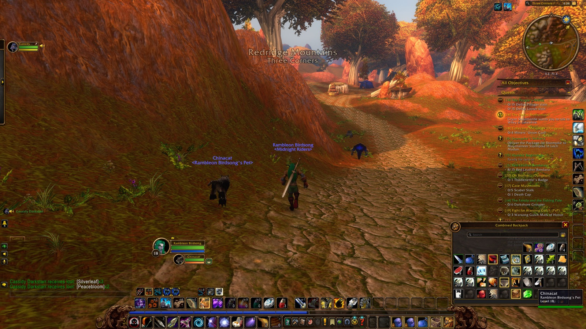
4:34 PM — Entered Redridge Mountains 4:34 PM — Discovered Three Corners
4:34 PM — Discovered Three Corners
4:35 PM — Accepted "Encroaching Gnolls"
4:38 PM — Discovered Redridge Mountains
4:38 PM — Entered Redridge Mountains
4:38 PM — Completed "Encroaching Gnolls"
4:39 PM — Accepted "Assessing the Threat"
4:39 PM — Accepted "Show of Force"
4:39 PM — Found the flight path at Redridge Mountains
4:39 PM — Entered Lake Everstill (Redridge Mountains)
4:39 PM — Discovered Lake Everstill
4:39 PM — Discovered Lake Everstill
4:39 PM — Discovered Lakeshire
4:39 PM — Discovered Lakeshire
4:39 PM — Entered Lakeshire (Redridge Mountains)
4:39 PM — Accepted "Blackrock Menace"
4:39 PM — Accepted "Blackrock Blockade"
4:39 PM — Accepted "The Lost Tools"
4:39 PM — Accepted "The Price of Shoes"
4:40 PM — Take Verner's Note to Smith Argus in Goldshire. — "The Price of Shoes"
4:40 PM — Accepted "WANTED: Gath'Ilzogg"
4:40 PM — Accepted "WANTED: Incinerator Gar'im"
4:41 PM — Accepted "Solomon's Law"
4:41 PM — Accepted "Messenger to Stormwind"
4:41 PM — Magistrate Solomon has given you a report which must be delivered to General Marcus Jonathan in Stormwind. The judge wants you to return to him as soon as the delivery has been made. — "Messenger to Stormwind"
4:41 PM — Accepted "Selling Fish"
4:41 PM — Accepted "WANTED: Lieutenant Fangore"
4:41 PM — Accepted "Dry Times"
4:41 PM — Accepted "A Free Lunch"
4:41 PM — Bring Parker's lunch to Guard Parker. He patrols the road leading to Darkshire. — "A Free Lunch"
4:42 PM — Completed "The Defias Brotherhood"
4:42 PM — Accepted "The Defias Brotherhood"
4:42 PM — Take Wiley's Note to Gryan Stoutmantle in Westfall. — "The Defias Brotherhood"
4:43 PM — Accepted "An Unwelcome Guest"
4:43 PM — Accepted "Redridge Goulash"
4:43 PM — Entered Lake Everstill (Redridge Mountains)
4:43 PM — Entered Lakeshire (Redridge Mountains)
4:43 PM — Entered Lake Everstill (Redridge Mountains)
4:43 PM — Accepted "Hilary's Necklace"
4:44 PM — Entered Redridge Mountains
4:44 PM — Flew from Redridge Mountains to Sentinel Hill, Westfall
4:44 PM — Entered Three Corners (Redridge Mountains)
4:44 PM — Entered The Darkened Bank (Duskwood)
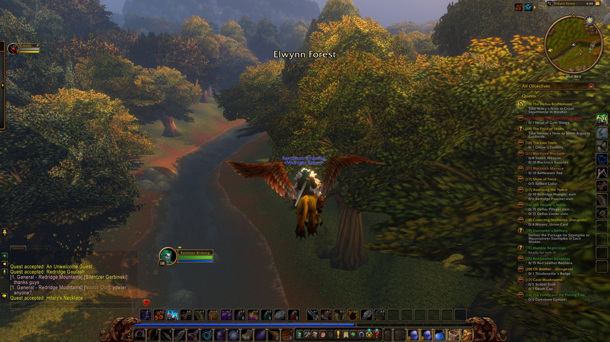
4:44 PM — Entered Duskwood 4:44 PM — Entered Elwynn Forest
4:45 PM — Entered The Darkened Bank (Duskwood)
4:45 PM — Entered Brackwell Pumpkin Patch (Elwynn Forest)
4:45 PM — Entered The Darkened Bank (Duskwood)
4:45 PM — Entered Elwynn Forest
4:45 PM — Entered Jerod's Landing (Elwynn Forest)
4:45 PM — Entered The Darkened Bank (Duskwood)
4:45 PM — Entered Jerod's Landing (Elwynn Forest)
4:45 PM — Entered The Maclure Vineyards (Elwynn Forest)
4:45 PM — Entered Fargodeep Mine (Elwynn Forest)
4:45 PM — Entered The Darkened Bank (Duskwood)
4:46 PM — Entered Forest's Edge (Elwynn Forest)
4:46 PM — Entered The Darkened Bank (Duskwood)
4:46 PM — Entered Westfall
4:46 PM — Entered Sentinel Hill (Westfall)
4:46 PM — Entered Sentinel Tower (Westfall)
4:46 PM — Completed "The Defias Brotherhood"
4:47 PM — Accepted "The Defias Brotherhood"
4:47 PM — Take Wiley's Note to Mathias Shaw in Stormwind. — "The Defias Brotherhood"
4:47 PM — Entered Sentinel Hill (Westfall)
4:47 PM — Flew from Sentinel Hill to Stormwind, Elwynn
4:47 PM — Entered Westfall
4:47 PM — Entered Saldean's Farm (Westfall)
4:47 PM — Entered Westfall
4:47 PM — Entered The Darkened Bank (Duskwood)
4:47 PM — Entered Forest's Edge (Elwynn Forest)
4:48 PM — Entered The Stonefield Farm (Elwynn Forest)
4:48 PM — Entered Forest's Edge (Elwynn Forest)
4:48 PM — Entered Elwynn Forest
4:48 PM — Entered Mirror Lake (Elwynn Forest)
4:48 PM — Entered Elwynn Forest
4:48 PM — Entered Valley of Heroes (Stormwind City)
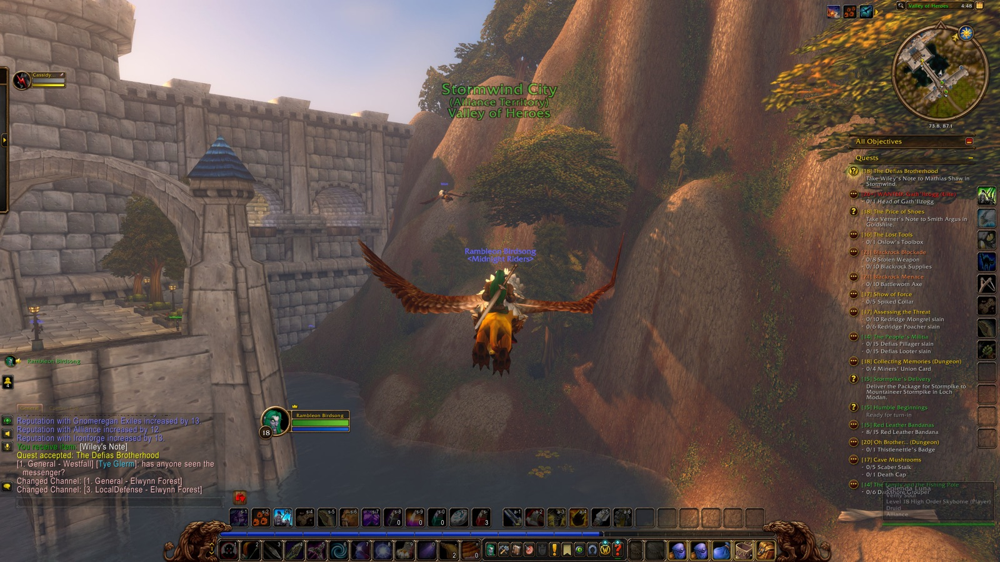
4:48 PM — Entered Stormwind City 4:48 PM — Entered Trade District (Stormwind City)
4:49 PM — Entered The Canals (Stormwind City)
4:50 PM — Entered Old Town (Stormwind City)
4:50 PM — Entered SI:7 (Stormwind City)
4:50 PM — Completed "The Defias Brotherhood"
4:50 PM — Accepted "The Defias Brotherhood"
4:50 PM — Take Shaw's report to Gryan Stoutmantle in Westfall. — "The Defias Brotherhood"
4:51 PM — Entered Old Town (Stormwind City)
4:51 PM — Entered The Canals (Stormwind City)
4:52 PM — Entered Cathedral Square (Stormwind City)
4:52 PM — Completed "Humble Beginnings"
4:53 PM — Entered The Canals (Stormwind City)
4:54 PM — Entered Trade District (Stormwind City)
4:54 PM — Entered Valley of Heroes (Stormwind City)
4:55 PM — Completed "Messenger to Stormwind"
4:55 PM — Accepted "Messenger to Stormwind"
4:55 PM — Take General Marcus Jonathan's letter of response to Magistrate Solomon in Lakeshire. — "Messenger to Stormwind"
4:55 PM — Entered Trade District (Stormwind City)
4:56 PM — Flew from Trade District to Lakeshire, Redridge
4:56 PM — Entered Valley of Heroes (Stormwind City)
4:56 PM — Entered Elwynn Forest
4:56 PM — Entered Goldshire (Elwynn Forest)
4:56 PM — Entered Elwynn Forest
4:57 PM — Entered Three Corners (Redridge Mountains)
4:57 PM — Entered Redridge Mountains
4:58 PM — Entered Three Corners (Redridge Mountains)
4:59 PM — Completed "A Free Lunch"
4:59 PM — Accepted "Visit the Herbalist"
5:00 PM — Entered Redridge Mountains
5:00 PM — Entered Lake Everstill (Redridge Mountains)
5:00 PM — Entered Lakeshire (Redridge Mountains)
5:01 PM — Completed "Messenger to Stormwind"
5:01 PM — Accepted "Messenger to Westfall"
5:01 PM — Magistrate Solomon wants you to take his written plea to Gryan Stoutmantle in Westfall. — "Messenger to Westfall"
5:02 PM — Completed "Visit the Herbalist"
5:02 PM — Accepted "Delivering Daffodils"
5:02 PM — Give Darcy the Daffodil Bouquet. — "Delivering Daffodils"
5:02 PM — Completed "Delivering Daffodils"
5:03 PM — Entered Lake Everstill (Redridge Mountains)
5:03 PM — Entered Redridge Mountains
5:03 PM — Flew from Redridge Mountains to Sentinel Hill, Westfall
5:03 PM — Entered Three Corners (Redridge Mountains)
5:04 PM — Entered The Darkened Bank (Duskwood)
5:04 PM — Entered Elwynn Forest
5:04 PM — Entered The Darkened Bank (Duskwood)
5:04 PM — Entered Brackwell Pumpkin Patch (Elwynn Forest)
5:04 PM — Entered The Darkened Bank (Duskwood)
5:04 PM — Entered Elwynn Forest
5:05 PM — Entered Jerod's Landing (Elwynn Forest)
5:05 PM — Entered The Darkened Bank (Duskwood)
5:05 PM — Entered Jerod's Landing (Elwynn Forest)
5:05 PM — Entered The Maclure Vineyards (Elwynn Forest)
5:05 PM — Entered Fargodeep Mine (Elwynn Forest)
5:05 PM — Entered The Darkened Bank (Duskwood)
5:05 PM — Entered Forest's Edge (Elwynn Forest)
5:05 PM — Entered The Darkened Bank (Duskwood)
5:05 PM — Entered Westfall
5:05 PM — Entered Sentinel Hill (Westfall)
5:06 PM — Entered Sentinel Tower (Westfall)
5:06 PM — Completed "The Defias Brotherhood"
5:06 PM — Accepted "The Defias Brotherhood"
5:06 PM — Completed "Messenger to Westfall"
5:06 PM — Accepted "Messenger to Westfall"
5:06 PM — Return to Magistrate Solomon with Gryan Stoutmantle's response. — "Messenger to Westfall"
5:07 PM — Entered Sentinel Hill (Westfall)
5:07 PM — Overheard in Sentinel Hill: Rs Healz and Vikhan Dreadwhisper (8 lines) 5:12 PM — Entered Westfall
5:12 PM — Entered Stendel's Pond (Westfall)
5:13 PM — Entered Westfall
5:13 PM — Entered Moonbrook (Westfall)
5:14 PM — First Defias Pillager slain
5:14 PM — A scene in Moonbrook with Alifax Jacket (3 lines) 5:15 PM — First Defias Messenger slain
5:15 PM — 1/1 A Mysterious Message — "The Defias Brotherhood"
5:16 PM — Entered Westfall
5:16 PM — Entered Stendel's Pond (Westfall)
5:16 PM — Looted Tigerseye (Uncommon)
5:17 PM — First Riverpaw Bandit slain
5:17 PM — Entered Sentinel Hill (Westfall)
5:18 PM — Entered Sentinel Tower (Westfall)
5:18 PM — Completed "The Defias Brotherhood"
5:18 PM — Reached Level 19
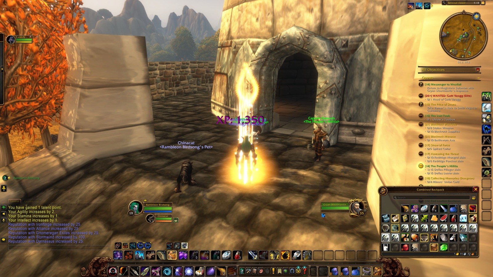
5:18 PM — Reached Level 19 in Sentinel Tower 5:18 PM — Entered Sentinel Hill (Westfall)
8:29 PM — Entered Sentinel Hill (Westfall)
8:31 PM — Joined forces with Cassidy (Druid)
8:31 PM — Joined forces with Ciel (Priest)
8:31 PM — Joined forces with Angelique (Hunter)
8:40 PM — Accepted "The Coastal Menace"
8:40 PM — Parted ways with Cassidy
8:40 PM — Parted ways with Ciel
8:40 PM — Parted ways with Angelique
8:40 PM — Joined forces with Vaowyn (Priest)
8:40 PM — Joined forces with El (Hunter)
8:42 PM — Entered Westfall
8:42 PM — Entered Sentinel Hill (Westfall)
8:43 PM — Entered Sentinel Tower (Westfall)
8:43 PM — Entered Sentinel Hill (Westfall)
8:44 PM — Entered Sentinel Tower (Westfall)
8:44 PM — Entered Sentinel Hill (Westfall)
8:45 PM — Joined forces with Cassidy (Druid)
8:45 PM — Entered Westfall
8:46 PM — Entered Stendel's Pond (Westfall)
8:46 PM — Entered Westfall
8:47 PM — Entered Moonbrook (Westfall)
8:51 PM — First Defias Looter slain
8:52 PM — First Defias Pillager slain
8:54 PM — Joined forces with Ityrandel (Druid)
8:55 PM — Looted Nomad Tunic of the Falcon (Uncommon)
8:58 PM — Overheard in Moonbrook: Cassidy Darkstarr and Saint Highfather (4 lines) 8:58 PM — First Defias Henchman slain
8:59 PM — First Defias Digger slain
9:03 PM — Parted ways with Ityrandel
9:06 PM — Entered The Dagger Hills (Westfall)
9:06 PM — Discovered The Dagger Hills
9:06 PM — Discovered The Dagger Hills
9:06 PM — Entered Moonbrook (Westfall)
9:09 PM — Joined forces with Billy (Druid)
9:17 PM — Discovered The Deadmines
9:17 PM — Entered Defias Hideout (The Deadmines)
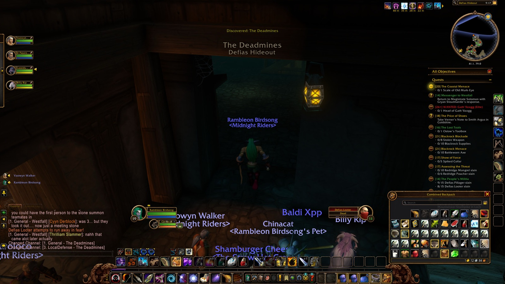
9:17 PM — Entered The Deadmines 9:17 PM — Entered The Deadmines
9:22 PM — Entered Deadmines
9:22 PM — First Defias Miner slain
9:23 PM — First Defias Overseer slain
9:23 PM — First Defias Evoker slain
9:26 PM — Looted Seer's Cape (Uncommon)
9:27 PM — Defeated Rhahk'Zor
9:27 PM — First Rhahk'Zor slain
9:28 PM — First Defias Watchman slain
9:33 PM — First Goblin Woodcarver slain
9:34 PM — Looted Woodworking Gloves (Uncommon)
9:34 PM — Entered Mast Room (The Deadmines)
9:37 PM — Defeated Sneed
9:37 PM — First Sneed slain
9:37 PM — First Sneed's Shredder slain
9:38 PM — Looted Dull Sawblade (Rare)
9:38 PM — First Defias Strip Miner slain
9:38 PM — 1/1 Gnoam Sprecklesprocket — "Underground Assault"
9:38 PM — Looted Shadowgem (Uncommon)
9:38 PM — Looted Inscribed Leather Breastplate (Uncommon)
9:38 PM — Entered The Deadmines
9:39 PM — First Defias Taskmaster slain
9:39 PM — Entered Mast Room (The Deadmines)
9:40 PM — Entered The Deadmines
9:41 PM — Entered Goblin Foundry (The Deadmines)
9:42 PM — First Goblin Craftsman slain
9:43 PM — First Goblin Engineer slain
9:45 PM — Died in Goblin Foundry
9:45 PM — Left Deadmines
9:45 PM — Entered Sentinel Hill (Westfall)
9:45 PM — Entered Stendel's Pond (Westfall)
9:45 PM — Entered Westfall
9:46 PM — Entered Moonbrook (Westfall)
9:46 PM — Entered Defias Hideout (The Deadmines)
9:46 PM — Entered The Deadmines
9:48 PM — Entered Deadmines
9:48 PM — Back among the living
9:50 PM — Entered Mast Room (The Deadmines)
9:50 PM — Entered The Deadmines
9:50 PM — Entered Goblin Foundry (The Deadmines)
9:55 PM — Defeated Gilnid
9:55 PM — First Gilnid slain
9:55 PM — Looted Meadow Ring of the Eagle (Uncommon)
9:55 PM — Looted Lavishly Jeweled Ring (Rare)
9:56 PM — First Defias Wizard slain
9:56 PM — Entered The Deadmines
10:01 PM — First Defias Pirate slain
10:01 PM — First Defias Squallshaper slain
10:02 PM — Looted Militant Shortsword of the Falcon (Uncommon)
10:02 PM — Entered Ironclad Cove (The Deadmines)
10:03 PM — Discovered Ironclad Cove
10:04 PM — First Goblin Shipbuilder slain
10:04 PM — Looted Bandit Bracers of the Falcon (Uncommon)
10:07 PM — First Defias Blackguard slain
10:08 PM — Died in Ironclad Cove
10:09 PM — Left Deadmines
10:09 PM — Entered Sentinel Hill (Westfall)
10:09 PM — Entered Stendel's Pond (Westfall)
10:09 PM — Entered Westfall
10:09 PM — Entered Moonbrook (Westfall)
10:10 PM — Entered Defias Hideout (The Deadmines)
10:10 PM — Entered The Deadmines
10:11 PM — Entered Deadmines
10:11 PM — Back among the living
10:13 PM — Entered Mast Room (The Deadmines)
10:13 PM — Entered The Deadmines
10:14 PM — Entered Goblin Foundry (The Deadmines)
10:14 PM — Entered The Deadmines
10:15 PM — Entered Ironclad Cove (The Deadmines)
10:16 PM — Defeated Mr. Smite
10:16 PM — First Mr. Smite slain
10:17 PM — Looted First Mate Band (Rare)
10:24 PM — Looted Blackwater Cutlass (Rare)
10:26 PM — Defeated Captain Greenskin
10:26 PM — First Captain Greenskin slain
10:28 PM — Defeated Edwin VanCleef
10:28 PM — First Edwin VanCleef slain
10:28 PM — Died in Ironclad Cove
10:30 PM — Back among the living
10:30 PM — Accepted "The Unsent Letter"
10:30 PM — Deliver the Letter to the City Architect to Baros Alexston in Stormwind. — "The Unsent Letter"
10:31 PM — Parted ways with Billy
10:33 PM — Defeated Cookie
10:33 PM — First Cookie slain
10:34 PM — Entered The Deadmines
10:35 PM — Left Deadmines
10:35 PM — Entered The Dagger Hills (Westfall)
10:36 PM — First Defias Highwayman slain
10:39 PM — Accepted "Thunderbrew"
10:42 PM — Entered Moonbrook (Westfall)
10:45 PM — Parted ways with Vaowyn
10:45 PM — Entered Westfall
10:45 PM — Entered Stendel's Pond (Westfall)
10:46 PM — Entered Westfall
10:46 PM — Entered Stendel's Pond (Westfall)
10:46 PM — Entered Westfall
10:46 PM — Entered Stendel's Pond (Westfall)
10:47 PM — First Fleshripper slain
10:47 PM — Entered Sentinel Hill (Westfall)
10:48 PM — Entered Sentinel Tower (Westfall)
10:48 PM — Entered Sentinel Hill (Westfall)
10:49 PM — Flew from Sentinel Hill to Stormwind, Elwynn
10:49 PM — Entered Westfall
10:49 PM — Entered Saldean's Farm (Westfall)
10:50 PM — Entered Westfall
10:50 PM — Entered The Darkened Bank (Duskwood)
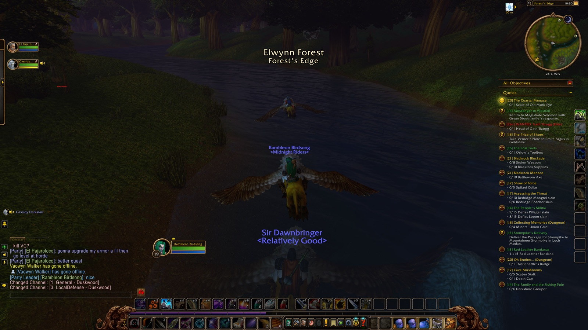
10:50 PM — Entered Duskwood 10:50 PM — Entered Forest's Edge (Elwynn Forest)
10:50 PM — Entered The Stonefield Farm (Elwynn Forest)
10:50 PM — Entered Forest's Edge (Elwynn Forest)
10:50 PM — Entered Elwynn Forest
10:50 PM — Entered Mirror Lake (Elwynn Forest)
10:50 PM — Entered Elwynn Forest
10:50 PM — Entered Valley of Heroes (Stormwind City)
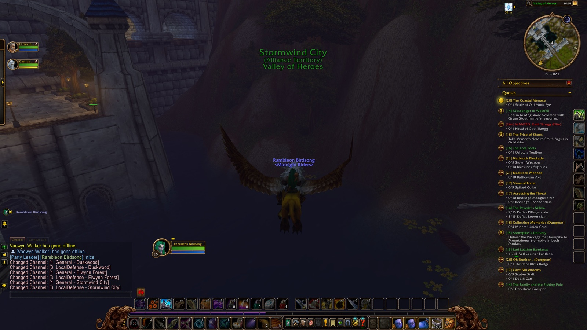
10:51 PM — Entered Stormwind City 10:51 PM — Entered Trade District (Stormwind City)
10:55 PM — Entered The Canals (Stormwind City)
10:55 PM — Entered Cathedral Square (Stormwind City)
10:56 PM — Completed "The Unsent Letter"
10:56 PM — Accepted "Bazil Thredd"
10:56 PM — Entered The Canals (Stormwind City)
10:57 PM — Entered Dwarven District (Stormwind City)
10:57 PM — Looted Bravo's Armbands (Uncommon)
10:57 PM — Completed "Underground Assault"
10:58 PM — Entered The Canals (Stormwind City)
10:59 PM — Entered Stormwind City
10:59 PM — Completed "Bazil Thredd"
10:59 PM — Accepted "The Stockade Riots"
10:59 PM — Entered The Canals (Stormwind City)
11:00 PM — Entered Trade District (Stormwind City)
11:01 PM — Flew from Trade District to Lakeshire, Redridge
11:01 PM — Entered Valley of Heroes (Stormwind City)
11:01 PM — Entered Elwynn Forest
11:01 PM — Entered Goldshire (Elwynn Forest)
11:01 PM — Entered Elwynn Forest
11:02 PM — Entered Three Corners (Redridge Mountains)
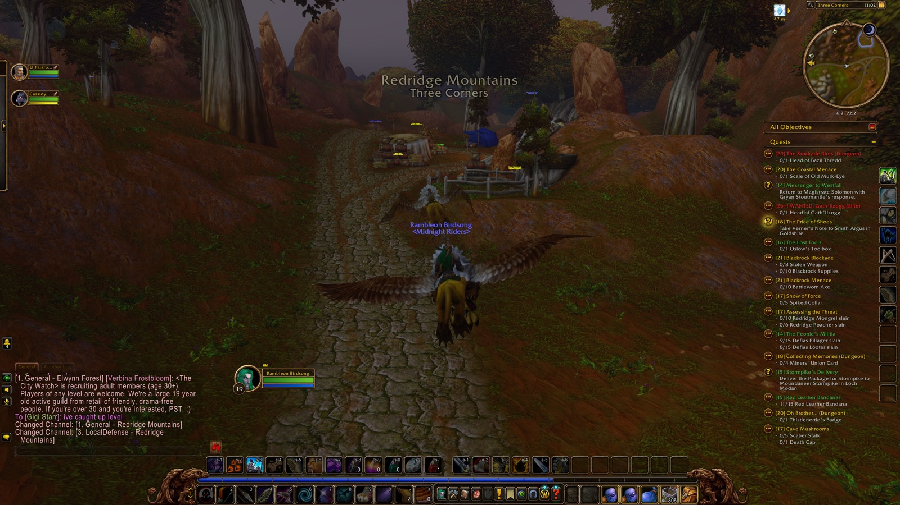
11:02 PM — Entered Redridge Mountains 11:03 PM — Entered Redridge Mountains
11:03 PM — Entered Lake Everstill (Redridge Mountains)
11:03 PM — Entered Lakeshire (Redridge Mountains)
11:05 PM — Completed "Messenger to Westfall"
11:05 PM — Accepted "Messenger to Darkshire"
11:05 PM — Magistrate Solomon wants you to take a letter to Lord Ebonlocke in Darkshire. — "Messenger to Darkshire"
11:07 PM — Made Lakeshire home
11:11 PM — Entered Lake Everstill (Redridge Mountains)
11:11 PM — Entered Redridge Mountains
11:12 PM — Entered Lakeridge Highway (Redridge Mountains)
11:12 PM — Discovered Lakeridge Highway
11:12 PM — Discovered Lakeridge Highway
11:16 PM — Entered Three Corners (Redridge Mountains)
11:16 PM — First Tarantula slain
11:17 PM — First Redridge Thrasher slain
11:17 PM — First Redridge Mongrel slain
11:19 PM — Entered Redridge Mountains
11:19 PM — Entered Three Corners (Redridge Mountains)
11:19 PM — Entered Redridge Mountains
11:20 PM — Entered Three Corners (Redridge Mountains)
11:23 PM — 10/10 Redridge Mongrel slain — "Assessing the Threat"
11:27 PM — Slain by Redridge Thrasher in Three Corners
11:27 PM — Entered Redridge Mountains
11:27 PM — Entered Three Corners (Redridge Mountains)
11:27 PM — Back among the living
11:28 PM — 5/5 Spiked Collar — "Show of Force"
11:30 PM — Entered Redridge Mountains
11:30 PM — Entered Lake Everstill (Redridge Mountains)
11:30 PM — Entered Redridge Mountains
11:31 PM — Entered Lakeshire (Redridge Mountains)
11:31 PM — Entered Redridge Mountains
11:31 PM — Discovered Redridge Canyons
11:31 PM — Discovered Redridge Canyons
11:31 PM — Entered Redridge Canyons (Redridge Mountains)
11:31 PM — Entered Rethban Caverns (Redridge Mountains)
11:31 PM — Discovered Rethban Caverns
11:31 PM — Discovered Rethban Caverns
11:32 PM — Entered Redridge Canyons (Redridge Mountains)
11:33 PM — First Redridge Brute slain
11:33 PM — First Black Dragon Whelp slain
11:34 PM — Entered Lakeshire (Redridge Mountains)
11:35 PM — Entered Redridge Canyons (Redridge Mountains)
11:35 PM — Entered Lakeshire (Redridge Mountains)
11:35 PM — Entered Redridge Mountains
11:35 PM — Entered Lakeshire (Redridge Mountains)
11:35 PM — Entered Redridge Mountains
11:35 PM — First Blackrock Grunt slain
11:36 PM — Parted ways with El
11:36 PM — Entered Lake Everstill (Redridge Mountains)
11:36 PM — Entered Redridge Mountains
11:36 PM — First Blackrock Outrunner slain
11:37 PM — Entered Alther's Mill (Redridge Mountains)
11:37 PM — Discovered Alther's Mill
11:37 PM — Discovered Alther's Mill
11:38 PM — First Greater Tarantula slain
11:38 PM — First Dire Condor slain
11:43 PM — Hearthed home to Lakeshire
11:43 PM — Entered Lakeshire (Redridge Mountains)
11:45 PM — Parted ways with Cassidy
↑ Back to top
Recorded by Rambleon · session night-2026-11-08-rambleon-birdsong-camwow-us2-realm-3-pve